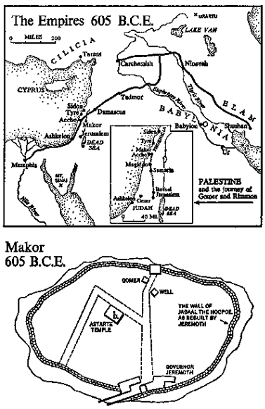

Babylonian armament
Babylonian armament. Left: Iron spearhead cast in the city of Urartu (Ararat) on the northern shore of Lake Van in Asia Minor, 684 B.C.E., and traded southward to Babylonia in exchange for woven fabrics. Originally fitted to the end of a four-foot cedar stave imported from Tyre. Right: Helmet in the Assyrian style, made of hammered bronze fitted with bronze rivets, made in 653 B.C.E. in the city of Shushan (Susa), capital of Elam on the border between Babylonia and Persia and traditionally antagonistic to the former. Deposited at Makor in late summer, 605 B.C.E.
These were the generations when Yahweh smote his Hebrews, for still he found them a stiff-necked people.
To punish them he used the Assyrians. In 733 B.C.E. he unleashed Tiglath-pileser III from Nineveh, and of his depredations the Bible says: “In the days of Pekah king of Israel came Tiglath-pileser king of Assyria … and took Hazor, and Gilead, and Galilee, all the land of Naphtali, and carried them captive to Assyria.” In this onslaught 185,000 people were slain and 591 towns were ravaged, but not Makor, for the defenses erected by Jabaal the Hoopoe held off the invaders through a formidable siege until an agreement of suzerainty was worked out. But in 701 B.C.E. Sennacherib came out of the north, and of him the Bible says: “Now in the fourteenth year of king Hezekiah did Sennacherib king of Assyria come up against all the fenced cities of Judah, and took them.” Even against this scourge Makor defended itself, protected by its David Tunnel, until at last the Assyrians appealed for negotiation, whereupon the community opened its zigzag gate voluntarily. At dawn Sennacherib entered the town; by noon he had assembled the tribute; and at dusk there was not a single house standing. Makor, gutted and burned, its walls thrown down in many places, had ceased to exist, and its Hebrew inhabitants were led away in slavery to join those Ten Tribes of the north who would henceforth be lost to history if not to legend: fanciful writers would try to prove that these lost Jews found new existence as Britons, Etruscans, Hindus, Japanese or Eskimos.
To castigate his Hebrews, Yahweh also used the Babylonians. In the year 612 B.C.E. this rising power humbled Nineveh, driving the Assyrians from the two rivers, and in 605 the mighty Nebuchadrezzar led his troops into one of the significant battles of history at Carchemish along the banks of the Euphrates. Of him the Bible says: “For thus saith the Lord God; Behold, I will bring upon Tyrus Nebuchadrezzar king of Babylon, a king of kings, from the north, with horses, and with chariots, and with horsemen, and companies, and much people. He shall slay with the sword thy daughters in the field: and he shall make a fort against thee, and cast a mount against thee, and lift up the buckler against thee. And he shall set engines of war against thy walls, and with his axes he shall break down thy towers.” And these things Nebuchadrezzar did.
And invariably Yahweh used the Egyptians to accomplish his purposes, throwing them sometimes against Assyria, sometimes against Babylonia, but always against the Hebrews, so that during these dynastic struggles the armies of Egypt were much seen in the Galilee; regardless of who the enemy was, the battles were apt to be fought here. For example, in 609 B.C.E. Josiah, one of the wisest kings the Hebrews were to produce, must have suffered a temporary derangement, for he entered a pact of mutual support on the side of upstart Babylon against established Egypt and Assyria. Of the pitiful battle that resulted the Bible says: “Necho king of Egypt came up to fight against Carchemish by Euphrates: and Judah went out against him.” The confrontation between Egyptian and Hebrew took place at Megiddo, that recurring site of Armageddon, and the good king Josiah was slain. Always the Egyptians were a threat.
During these turbulent years the stubborn Family of Ur managed to maintain Makor as a minor outpost in no way comparable to its predecessors. Even the town wall, built by Jabaal the Hoopoe in the reign of King David, existed only in fragments, while the principal street, if it could be called such, ran from the main gate to the postern past a miserable collection of buildings. Where a score of enticing shops had once flourished, offering wares from all parts of the Mediterranean, two now offered little. Citizens eked out a frugal existence, for the luxury that had characterized the days of David and Solomon was no more.
At opposite ends of the Water Street stood two houses which summarized the new Makor. By the main gate, in a low, poorly built establishment that rambled over a considerable area and was kept to one floor because Makor could no longer afford timber, lived Jeremoth, scion of the Family of Ur and willing to serve as governor for whatever empire ruled the valleys. He was fifty-two years old, a resolute and crafty man whose ancestors, by one trick or another, had kept the town intact through the civil war that had destroyed the empire of King Solomon and through two hundred years of unremitting Phoenician, Aramaean, Assyrian and Egyptian pressures. In the mournful chaos of those years the Family of Ur had trimmed its banners to each new conqueror marching up to the battered walls. In siege, in pestilence and in terror the determined men of Ur had somehow managed to hold on to their olive trees south of the town and to some kind of governmental residence near the main gate.
Jeremoth, black-bearded, wiry and courageous beyond most of the men in his town, was governed by one fixed idea: this continuity of occupation must be preserved. If the erupting power of Babylon made war against Egypt inevitable, there would have to be war, and Makor would again be trapped between the armies; but if guile and persuasion could preserve the little town, then he was prepared to temporize with anyone. He had five daughters, four of them married to leading merchants and farmers, and he also had a group of brothers who were just as tough as he. Like many families in Makor they had relapsed into being Canaanites who worshiped Baal on the mountain back of the town, and as a well-disciplined unit they relied on the hope there would always be some trick whereby they could keep their holdings intact, diminished though they might be.
At the other end of the Water Street, cramped into a corner near the ruins of the postern gate, stood a small one-room house made of unbaked clay bricks. It had an earthen floor, no furniture, only one window, and the clinging smell of meanness and poverty. It was the home of Gomer the widow, a tall, gaunt woman of fifty-eight who had known a difficult life. An ugly girl, she had married late as the third wife of a miserable man who had derided her in public for being childless and who used her as a slave. After many years, and as the result of a scene she had tried to erase from her memory—Egyptian soldiers rioting inside the walls —she had become pregnant, and the wretched old man had suspected that the child was not his. In public he was afraid to challenge her lest he himself look foolish, but in the privacy of their mean home he had abused her; yet when he died it was she and not his earlier wives who tended to his burial.
She had only this one child, a son whom she had named Rimmon, after the pomegranate, hoping that like the seeds of that fruit he might have many children to send her line forward, and Rimmon had grown into a handsome young man of twenty-two whom the young girls of the town admired and who now held the job of supervising Governor Jeremoth’s olive grove. He and his mother were staunch supporters of Yahweh, the Hebrew god, but as a man who worked in the fields for a Canaanite, Rimmon found it prudent to worship Baal as well—a fact which he did not discuss with his mother.
Gomer was a gawky, forbidding woman. Her hair was not even a clean gray, which would have brought her respect; it was a muddy gray. Her eyes were not clear nor was her skin attractive. She had worked so hard that she walked with a stoop which made her seem older than she was, and the only thing about her that was appealing was her soft, quiet voice, hushed through half a century of obeying first her father, then her abusive husband, and finally her handsome son. She spoke quietly, as if she were still in the fields, living in the harvest booth with her father as he guarded the barley and the vines. In her long life those were the only days she remembered with affection, the happy days of harvest time when men built booths so as to be near the produce of their lands.
Now, in the year 606 B.C.E., in the days before Ethanim, the month of feasts —when heat from the desert spread over the land, when late grapes were ripening for the wine presses, and when great Egypt and Babylonia were getting ready to tear at each other while Greece gathered strength in the west—Gomer left her mean house by the postern gate, balanced a clay jug on her head, and descended the gaping shaft that cut into the earth not far from her home. By a considerable margin she was the oldest woman lugging water, and her long spare figure in tattered sackcloth looked out of place as she patiently went down the familiar steps in the company of young wives and slave girls. But since she had no slave or daughter-in-law to help her she was forced to fetch the water for herself.
She had descended to the well, had filled her jug and started her return journey, when she came to a section of the David Tunnel where the oil lamp that hung over the water could no longer be seen, yet where the daylight coming down the shaft brought little illumination, and in this dark passage she heard a voice saying to her, “Gomer, widow of Israel! Take your son up to Jerusalem, that he may cast his eyes upon my city.” She looked around to find who had spoken, but there was only darkness, and she thought that one of the younger women had hidden to taunt her, for often they made fun of her; but again the voice surrounded her, and this time she was certain that it could not belong to any woman. It said, “Gomer, let your son see Jerusalem.”
Not in fear but in bewilderment she left the tunnel and climbed the shaft, ignoring the calls of younger women who were descending by the other stairs, and in a kind of trance she sought for her son, but he had already gone to the olive press, so she put her jug down, went to the main gate and crossed the Damascus road, entering the olive grove belonging to Governor Jeremoth. After a few moments she saw her son working at the press, that ancient system of square stone pits cut into the solid rock and connected by lead pipes so that the settled oil could fall and filter of its own weight. Fortunately, she stopped before coming upon her son, for he was kneeling by the press and she realized that he was saying his morning prayers to Baal, pleading for a good run of oil. She waited until he was finished, disturbed that he should be trafficking with Baal on this particular morning, then went to him.
As always, when she came upon him suddenly, she was impressed anew with what she could only call his radiance: like many of the Hebrews he was blond and freckle-faced, tall and with a quick intelligence. As the son of a widow who was almost a pauper, he had worked in the fields all his life and could neither read nor write, but he had learned from his mother the cherished stories of his people, particularly the steps whereby Yahweh had revealed himself to the Hebrews. At twenty-two he was a young laborer in charge of the one operation which brought surplus money into Makor, so he prayed to Yahweh for moral guidance in the conduct of his life and to Baal for success in his daily work.
Under the fruitful trees Gomer asked, “Rimmon, have you made any plans for going up to Jerusalem?”
“No.”
“Have you ever wanted to go?”
“No.”
She said no more. Returning home she went about her business of trying to borrow some scraps of meat to make a lentil soup for the evening meal of her hungry son, but there was scarcely any food, so at midday she walked along the Water Street until she came to the rambling house in which Governor Jeremoth lived, and there she appealed to the various women living in the house for any sewing or mending jobs which they might have. None could be found, but the governor’s wife took pity on her and said, “My daughter Mikal has been asking for a new white robe in case she accompanies her father to Jerusalem for the feasts.” And she summoned Mikal, a small, dark girl of eighteen, about whom there was much speculation since she was not yet married. She was a lively girl, appreciated by men and women alike, for she had a merry laughter and a birdlike way of tilting her head to smile at whoever addressed her.
Mikal was pleased that the making of her new dress was to be turned over to Gomer, for she had found the older woman pleasant to work with: Gomer was never late, never unpleasant, never delinquent in getting the dress or the undergarment finished as planned. In addition, she had a peasant’s dignity, talking quietly of interesting matters as she worked, and on this fateful afternoon Mikal and Gomer renewed their pleasant friendship.
But next morning as the widow came back through the David Tunnel, her jug filled with water, she was halted as if a mighty hand were obstructing the passageway and a voice said to her, “For the salvation of the world it is essential that Rimmon see Jerusalem.”
Gomer tried to pass the barrier but could not; her feet were nailed to the tunnel floor. “Are you Yahweh?” she asked.
“I am that I am,” the voice replied, echoing from all sides. “And I command you: Take your son up to Jerusalem!”
The invisible barrier was removed, and after a few hesitant steps Gomer could see daylight coming from the shaft. She ran home and forced ail thoughts of the tunnel from her mind. She worked upon Mikal’s white dress as if it were the sole undertaking in the world, and her preoccupation was so complete that she was able to bury all thought of Yahweh and Rimmon and Jerusalem. But in the evening, when the voice of cattle came to the gate, and when she could no longer see to thread the needle, she again asked her returning son if he wished to visit Jerusalem.
“No. That’s for priests.”
“You have no desire to see the City of David?”
“You’ve never seen it. Why should I?”
“I’ve always wanted to,” she said in the darkness.
“Why didn’t you go?”
“Can a widow go to Jerusalem? At the Feast of Tabernacles? Who would build her a booth?”
He could not see her face, but it had become transfused with yearning. Like many Hebrews of her generation she longed for Jerusalem as bees long for spring to open the flowers or as lions trapped in the valley hunger for the hills. It was the golden city, the site of the temple, the focus of worship, the target of longing. No other city in the world until the advent of Rome would have the profound effect upon its adherents that Jerusalem had upon the Hebrews, and this in spite of the evil days that had befallen the land. After the death of Solomon the vast empire of King David had degenerated into civil war, splitting into two separate nations, Israel on the north, with its capital at Samaria, and Judah in the south, with its capital at Jerusalem. But with the conquests of Sennacherib the northern kingdom was practically exterminated, as the Bible says: “Then the king of Assyria came up throughout all the land, and went up to Samaria, and besieged it three years. In the ninth year of Hoshea the king of Assyria took Samaria, and carried Israel away into Assyria, and placed them in Halah and in Habor by the river of Gozan, and in the cities of the Medes.” However, a remnant of Hebrews continued to exist in towns like Makor, subservient to alien rulers and forbidden to make pilgrimages to Jerusalem. Even so, faithful northerners like Gomer still maintained the City of David as their earthly goal.
“For more than fifty years Jerusalem has been before my eyes,” Gomer said.
“I’m afraid you won’t see it now,” her son replied, not mockingly.
“Suppose I said tonight, ‘In the morning we shall go up to Jerusalem’?”
Rimmon laughed. “We have no money. I must watch the olive press and you must finish the garment.”
Those were Gomer’s ideas, too, and she sadly dismissed from her mind any plans for going to Jerusalem; but next morning in the David Tunnel she was stopped for the third time, and the voice said like the roar of a lion, “Gomer, widow of Israel, for the third time, take your son and go up to Jerusalem, or the penalty will rest upon your children’s children till the end of days.”
In the darkness she answered obediently, “I will take my son to Jerusalem, but may I halt here until the white dress is finished?”
There was a silence, as if the presence were spending his time in judging this humble request, and after a while the voice said, “You are a woman who earns her bread by sewing. For you it is proper first to finish the work and then to leave for Jerusalem.” And Yahweh bided his time.
It took Gomer two days of concentrated work to complete the dress, and when she fitted it on the governor’s daughter that young woman seemed more beautiful than ever. “I shall wear it at the dancing,” she said with excitement.
“Then you’re going to Jerusalem?” Gomer asked.
“Father has decided. It’s been four years, and as governor…” The girl grew grave, with shadows across her youthful face. “Do you think the Egyptians will call us to war again?”
“The Assyrians and the Babylonians and the Egyptians and the Phoenicians and the Aramaeans,” Gomer recited as she cut the last threads, “they call us to war perpetually. Your father has protected us well and I’m glad that he’s going to Jerusalem to talk with the leaders of Judah.” She hesitated. “Would you please ask him if he could pay me today?”
“Of course!” the young woman said, and she ran to find her father, but when he heard of the widow’s unusual request he came into the sewing room, showing displeasure.
“Have the people of Jeremoth’s house ever failed to pay?” he demanded. Ordinarily a widow like Gomer would have been overawed by the governor, for he could be a frightening man, with unsympathetic eyes that had gazed with equal courage upon disaster and triumph. He had governed Makor under seven different rulers and in doing so had developed a hardness that almost glittered.
But this was not an ordinary day nor was Gomer any longer an ordinary woman: she had been commanded by Yahweh to perform an act upon which the salvation of the world depended, and Governor Jeremoth did not cow her. In her soft voice she said, “You have always paid, sir. But in the morning my son and I must leave for Jerusalem…”
“What?”
“This year we shall build our booth in the holy city.”
“You?” the governor sputtered, then he asked, “Does Rimmon know of this?”
“Not yet, but…”
In amused contempt the governor turned away from Gomer and directed one of his guards to summon Rimmon from the olive press, and when the young foreman stood before him Jeremoth said, “Rimmon, your mother tells me that you’re going up to Jerusalem tomorrow morning. Leaving my groves without permission.”
“Jerusalem?” the young man repeated in surprise. “I have no plans…”
Then came the moment of decision, that fragile moment which was to determine so much of Makor’s history in the months ahead. Gomer, seeing the contempt of the governor and her son’s unwillingness to oppose him, was briefly tempted to abandon her plans, but when she tried to withdraw her statement she found herself incapable of doing so. The words of retreat simply would not come from her throat. Instead, she looked directly at the governor and said in a low, soft voice marked by an intensity she had never shown before, “It is commanded that I take my son to Jerusalem tomorrow.”
As soon as she said the words, she knew that she had evaded the one central problem of this day: it had not been intended for her to say, “It is commanded”; she should have said, “Yahweh commands.” But as a poor widow of humble origins she had neither the courage nor the arrogance to use that dreadful sentence. This day she avoided the issue and placed the responsibility upon an anonymous force. “It is commanded,” she said.
But even that evasion was sufficient, for something transpired in the room that Governor Jeremoth could not have explained. Somehow he knew who had done the commanding; with the Hebrews these mysteries occasionally happened and he avoided a confrontation in which he did not consider himself involved. A Canaanite rather than a Hebrew, a man of Baal rather than of Yahweh, he was nevertheless eager, as a practical politician, to avoid antagonizing any god at a time when the shadows of Egypt and Babylon loomed so large across the Galilee, and it was this that kept him from challenging Gomer. To his daughter’s surprise and to Rimmon’s, too, he announced, “Very well, Gomer. Here’s your bag of money. Build the best booth in Jerusalem.”
Rimmon tried to apologize, “Sir, I had nothing to do…” but the governor was gone, glad to have escaped the onus of decision. Thus the first of the critical challenges that would mark this pivotal age had occurred, although at the time neither Gomer nor Jeremoth recognized it. And Gomer of the soft voice had prevailed.
The journey up to Jerusalem in that hot month of Ethanim was, as Yahweh had intended, an experience that Rimmon would never forget, although while undergoing it he perceived it as a physical adventure rather than as a spiritual ascent. It was a distance of more than ninety miles over difficult and wearing terrain, to be finished in the hot time of autumn, so that the journey occupied eight days. Mother and son left the zigzag gate at dawn, a tall pair dressed in the cheapest clothes, shod in heavy sandals and carrying staves. On their backs they carried a little food, in their purses a few pieces of silver, but Rimmon had with him an additional item that would prove of considerable value: lengths of cord with which to build his booth on the slopes leading up to Jerusalem’s walls.
Leading his gaunt mother, who had no idea as to where the city lay, Rimmon started south through the olive grove, where he was minded to ask Baal to tend the trees during his absence; but when he started to kneel by the olive press his mother took him by the arm, saying, “There is no Baal, forevermore,” and her grip was like the clutch of iron upon his muscles and turned him away. He led her through the dark swamp, where insects tormented them, across the Kishon River and up to the fortress city of Megiddo, where they wept for the good king who had recently been slain in his futile war against the Egyptians.
From this mournful spot they dropped down to Samaria, the capital city of the former kingdom of Israel, a strange place occupied by aliens forcibly settled there by the father of Sennacherib, and through the years these strangers had perfected a unique religion, borrowed from the Hebrews but a faith apart. Samaria both fascinated and repelled the travelers, and they gladly left it to climb to Bethel, where a problem of serious proportion confronted them, for this town had always marked the southern outpost of Israel and had served as a kind of watchdog to keep northerners from crossing the border in their attempts to visit Jerusalem. Even now many in Bethel considered it disloyal for a man of fighting age like Rimmon to leave the north, and certain fanatics tried to prevent him from doing so. But soft-spoken Gomer countered their arguments, saying, “I am an old woman who must see Jerusalem before I die,” and she led her son through the taunting Bethelites until she reached the village Of Anathoth, where prophets lived, and from there she and her son began the steep ascent to Jerusalem.
In the first hours they climbed without actually seeing the noble city, but they were assured that they were on the right path by the hundreds of other pilgrims streaming in from outlying regions to celebrate in Jerusalem the high holy days which marked the beginning of each new year.
There were young priests from Dan and date farmers from the shores of Galilee come down to pray for a bountiful harvest. There were Hebrew dyers who kept their vats in the seaport city of Aecho, nestled among Aramaean and Cypriot merchants. There were Hebrews from Samaria who had doggedly held to their own religion amidst the enemy, and there were poor villagers from Shunem, where King David had found his last and greatest concubine, the sweet child Abishag. Those who could afford to do so led animals for sacrifice at the temple altars, and one could hear the lowing of cattle and the cry of sheep. Others carried chickens intended for their own consumption and some women had white doves captured in cages made of reeds: these were for the temple. A few farmers rode donkeys, but most came on foot to worship at the central shrine of the Hebrews, to see with their own eyes the everlasting glory of Jerusalem.
Gomer and her son were struggling up the last steep, rocky path, surrounded by barren hills and deep wadis, when they heard ahead of them the joyful chant of people singing the traditional songs of the ascent:
“I rejoiced when they said unto me: ‘Let us go unto the house of Yahweh.’ Our feet are standing Within your gates, O Jerusalem… Whither the tribes go up, even the tribes of Yahweh.”
All joined in this song of delight, but never for long did this mood prevail, for always some tormented voice, unable to believe that it was on the threshold of Jerusalem, would cry in humble supplication: “Out of the depths have I called upon you, Yahweh. Yahweh, hear my voice. Let your ears be attentive to the voice of my supplications.”
Most endeavored to suppress their own desires and to submit themselves to the will of Yahweh, trusting as Gomer did that his guidance would sustain them: “Yahweh, my heart is not haughty nor my eyes lofty; Neither do I exercise myself in things too great, Or in things too wonderful for me.”
And when they entered upon the last league they made a solemn promise that they would march uninterruptedly to the holy city regardless of what impediments they might encounter: “Yahweh, let me remember David and his afflictions, How he swore unto Yahweh And vowed unto the god of Jacob. Surely I will not come into the tent of my own house Nor go up into the bed that is spread for me; I will not give sleep to my eyes Nor slumber to my eyelids Until I find out a place for Yahweh, A dwelling place for the mighty one.”
And then, when the day was very hot upon them, Gomer and Rimmon heard the singers ahead suddenly cease, and everywhere there was silence as those behind pushed forward, and at last the multitude looked south across bare hills and saw rising before them a stout, high wall, a most massive thing built of enormous stones that shone pink and gray and purple in the noonday sun; and from the walls, rose towers marking a gate, and beyond it the majestic outlines of a temple, heavy and monumental and brooding. Many fell to their knees, to think that they had lived to see this city, but Gomer noticed that Rimmon stood apart, staring at the extraordinary walls and the ineffable grace that invested the stones of this sacred place. Watching her son absorb the wonder of Jerusalem she tried to guess what divine need had brought him to this spot, but she knew not, and then she found herself pulled to his side and her soft voice began whispering words and ideas that she herself could not have conjured up: “Look not to the walls, Rimmon son of Gomer. Look rather to the west to those slopes by the fullers’ field. A hundred years ago did not Sennacherib, having crushed Makor, camp in that spot, his army as thick as locusts in the seventh year? And did he not make preparations to destroy Jerusalem”—of these matters Gomer knew nothing—“so that the holy City of David lay powerless before him? The terrible Assyrian needed only to press against those pink-gray walls, and Jerusalem was his that he might crush the temple and destroy the sons of Judah forever. But at the middle of the night I moved among the tents of the Assyrians. More powerful than chariots was I that night, more deadly than arrows tipped with iron, and in the morning death was upon the host and it melted away.”
Rimmon noticed the peculiar use of the word I, and he realized that his mother could not be the one who was speaking; she, regaining consciousness, experienced for the first time the mystery of knowing that words had come from her mouth which she had not uttered. Both were aware that an incident of tremendous significance had occurred, but each was loath to investigate. Rimmon did not want to believe that Yahweh was speaking to him, for he could not consider himself worthy of such elevation, while Gomer knew that she was an ignorant woman who could neither read nor write, with no more possessions than she could gather into a large bag. In her life no man had loved her, and her son owned a father whose name no scroll recorded. It was not to such persons that Yahweh spoke; he did not choose people from the postern gate to represent him, and Gomer and her son drew away from any assumption of prophecy.
Trying to be matter-of-fact Rimmon asked, “Didn’t Sennacherib destroy Jerusalem? Like Makor?”
“I don’t think so,” his mother said in her own voice. Vaguely she remembered an old fable of how the city had been saved. “The cohorts were ready to strike, but they vanished.” And as two ordinary pilgrims they entered the city.
They came upon a scene that could not have been duplicated anywhere in the contemporary world, neither in young Greece, where mysteries were practiced, nor in old Egypt, where celebrations along the Nile were sumptuous. In Babylonia, of course, there was grandeur and in Persia an awakening power, but only in Jerusalem could one see the solemn passion of an entire people, coming to focus on one splendid temple constructed centuries earlier by Solomon. It was to this apex of Hebrew faith that Gomer had brought her son for a purpose which she could never have comprehended, and before the temple they bowed.
Then Rimmon led his mother outside the walls to a mount of olives at whose foot ran the Brook Kidron, rich with gardens and pomegranate trees and beds of many vegetables. From the trees the young farmer cut boughs and four corner poles, and with his cords built of them a booth in which he and Gomer would sleep for eight nights: on the mount as far as one could see were these booths, each with its branches so interlaced that a sleeping man could waken in the middle of the night and see the stars. Thus the Hebrews remembered the lonely decades in the desert when they were coming to know Yahweh in their ragged tents: each year all men of Israel and Judah took to their booths as Gomer and Rimmon did now.
In the morning they rose early and left the mount of olives, returning inside the city, where they worshiped at the temple, Gomer standing outside with the women while her son went into the sacred place to gaze at the holy of holies, to which only a few priests were admitted. Later he joined his mother to observe the animal sacrifices during which perfect bulls were led lowing to the altar, and here as the solemn rite was concluded, with incense penetrating the brain, Rimmon caught an understanding of man’s eternal submission to Yahweh; and as the sacrificial fires twisted upward the significance of his faith was burned into his consciousness. This city he would remember forever, and on the sixth day Gomer heard him whispering, “O Jerusalem, if I forget you let my eyes be blinded, let my right hand lose its cunning.”
But it was not only for these solemn moments that pilgrims made the long trek to Jerusalem; for after the days of worship had ended, after the fields were gleaned and the grapes were pressed, lyric celebrations occurred in which festivities as old as the land of Canaan were re-enacted, and none was more compelling than the night on which the unmarried maidens of Israel dressed themselves in white gowns, newly made, to go out into the vineyards on the way to Bethlehem where ceremonial grapes had been held in reserve, and there to nominate one of their number to enter the wine press with her new dress clutched about her knees, where she would dance upon these final grapes while her sisters sang in the most ravishing tones the unharmonized plain chant of longing: “Young men, young men of Jerusalem! Lift up your eyes and see whom, See whom, see whom, You shall marry. Look not for beauty, Look not for smiles, But look for a girl of good family, A family that worships Yahweh.”
And as the girls danced about the wine press Rimmon watched with growing wonder the freshness of the faces and the desirability of these laughing eyes as they flashed past him in the torchlight, begging him to sample them, to see whom he would marry.
But after a while the girl whose ankles were deep among the grapes grew weary, and she signaled for a replacement, and by chance the girls of Jerusalem picked as her successor a beautiful stranger from the north, Mikal the daughter of the governor of Makor, and men swung her into the wine press. As she clutched her new dress to keep it from being stained, Rimmon experienced the curious sensation that the dress was in a sense his dress—it had come from his kitchen and he had known it before even Mikal had known it—and it danced of itself, a swirling, beautiful white robe; and he reached for his mother’s hand, congratulating her upon having made such a garment.
Then his heart exploded with the love that would never leave it, for it was not the dress that was dancing, but a girl twisting her head to the music, laughing, trying vainly to keep the juices of the grape from staining her new dress, and finally, when she saw that she could no longer protect it, dropping it and throwing her hands in the air as the tempo of the music increased and she became stained even to her face with the purple that in the end dripped from her chin as she tried to taste it with her red tongue. It was a primitive moment that recalled the entire history of the Hebrews from before the days when they knew Yahweh or the Pharaohs, and Rimmon stood entranced, but when the music ended and it became some other girl’s turn to press the symbolic grapes, it was he who lifted Mikal from the vat, and she hung for a moment in the air, looking down at him.
“Rimmon!” she cried, and she allowed him to set her upon the ground and to brush away the grape juice, and when his rough hand reached her face she did not draw back, but kept her stained chin raised toward his, and he kissed her.
On the way home from Jerusalem he informed his mother that he was going to marry Mikal, and she objected on the grounds that a Hebrew boy should not marry a girl whose family was more Canaanite than Hebrew. Rimmon would not listen to this argument, and his mother found in him the same kind of hardness that she had had to develop over the preceding decades. This pleased her insofar as her son’s character was concerned, but it frightened her when applied to the matter of selecting a wife, and she wondered what she could do to prevent a hasty decision. As they were picking their way through the swamp north of Megiddo she asked casually, “Are you aware of what Governor Jeremoth’s name means?”
To Hebrews a man’s name carried a significance unknown in other nations, and Rimmon, anticipating his mother’s purpose, said, “It means high places, and he worships in the high places.”
“His whole family does, and for him to go to Jerusalem, or for his daughter to dance at the festival, is offensive.”
“Are you warning me against Mikal?” he asked abruptly.
“Yes. Our town has many excellent Hebrew girls, loyal to Yahweh.” She was strongly impelled to advise him that he had been chosen by Yahweh for some austere purpose, that it was imperative for him to make his peace in all ways with Yahweh, but she could not do this, for she had no conception of what mission he had been called upon to serve. She therefore gave the limpest of all arguments: “Have you considered marrying Geula? She comes from an old priestly family.”
At that moment they were heading through the worst part of the swamp, and at the mention of Geula’s name Rimmon made an ugly face, which angered his mother and she berated him: “Geula may not be beautiful, but she knows virtue, and it is not proper to make faces at a girl of marked devotion.” Rimmon stopped this argument by saying, “I was making faces at the water snake that slipped from the rock,” and his mother grew silent and moved closer to him, for the nearness of a poisonous snake was frightening when she knew that her son had been singled out for some austere purpose.
When they cleared the swamp and climbed to higher ground they saw ahead of them the broken walls of Makor, and each compared that poor town with the grandeur of Jerusalem, and they saw for themselves what a miserable place it was; the invading armies had destroyed so much. Where eight hundred people had lived inside the walls in comfortable houses during King David’s time, fewer than five hundred now lived in near-poverty. The rich fields outside, which had supported nine hundred farmers, had now only a hundred peasants who never knew when the next marauder would burn their crops and carry them off to slavery. These were dreadful years in Galilee, during which Makor sustained the smallest population of its long history, but Gomer suspected that evil of greater magnitude lay ahead. It must have been for this reason that Yahweh had spoken to her in the tunnel, charging her with the task of preparing her son for the trials that faced the Hebrews, and now, as she returned to the town which had brought her such little happiness, she clutched his hand and headed for the main gate, unaware that the test would fall not upon him but on her.
Against his mother’s wishes Rimmon married Mikal, and against Gomer’s own wishes she soon had to confess what a pleasing girl the governor’s daughter was: laughing and beautiful, Mikal quickly proved that she was going to make Rimmon an excellent wife; she brought him a dowry larger than he could have expected and she prevailed upon her father to let him run the olive grove, not as foreman but as co-owner. She moved into the bleak house by the postern gate, sewed the necessary clothes, and then gave testimony of her love for Rimmon that no governor’s daughter was required to give. One morning as Gomer lifted the water jug onto her head preparatory to the long descent and longer walk through the dark tunnel, Mikal took down the jug and said, “From now on I shall fetch the water.”
The tired old woman looked down at the bright face, so hopeful in the morning light and so satisfied with the child that was growing near her heart, and Gomer said, “Today you have brought me rubies,” and she bent down and for the first time kissed her daughter and continued, “The only remaining thing I can do for my son is going to the well.” She carried the jug herself, but each morning young Mikal would watch for the moment when her mother started for the well, and she would lift the jug and say, “Now I shall fetch the water,” and each morning old Gomer would refuse the offer, but her heart was overcome that her daughter had again volunteered.
Then came the days of terror. Out of the south, eastward of Megiddo, appeared the great army of the Pharaoh Necho, with men by the thousands and chariots whose dust obscured the sun, with generals in pleated tunics and foot soldiers burdened with spears. Fanning out swiftly in all directions the army occupied crossroads and villages and even walled towns.
“We are going north to crush Babylon forever,” the armed emissaries told Governor Jeremoth, “and from Makor we require two hundred men and their supplies. By sunset tonight.”
A cry of protest went up from the town, and when Jeremoth was reluctant to identify which men must go, the Egyptians did the job for him. Throwing a cordon about the town they first marched off everyone living outside the walls. When Jeremoth protested that these were the farmers who fed the town, the Egyptian general shouted up at him, “When you begin to starve, your women will find the fields. You have five daughters. You’ll eat.”
They then searched the houses and picked every man who looked as if he could walk a hundred miles. At Gomer’s they grabbed Rimmon as a prize Soldier and told him on the spot that he was to be a captain of the Hebrews, and before he could say good-bye to his mother or his wife they had him outside the walls, where they began immediately to give him orders. He started to protest that he would not lead his Hebrews against the Babylonians, but he did not finish. An Egyptian soldier—not even an officer—struck him across the neck with a war mace and he fell unconscious to the ground.
From the wall his mother saw her son fall and she thought he was killed. Like an ordinary woman struck with terror she wanted to whimper softly, but an outside power took possession of her throat and from the walls she pointed with a long right arm and an extended forefinger. Her hair blew in the evening wind and her figure seemed to increase in its gaunt height, losing its stoop, and from her throat came for the first time a voice of extraordinary power, echoing across the town and into the hearts of the Egyptian invaders:
“O men of Egypt! Too long have you tormented the children of Yahweh, too long. You march north to battle which hyenas and vultures will long celebrate as they tear at your bones. You proud generals in pleated tunics, at the great battle your eyes will be put out and you will spend your years in darkness, toiling for the Babylonians. You insolent charioteers in armor, your horses shall drag you through cinders, and rocks of the field will clutch at your brains. You priests who accompany the mighty force to give it sanction, how you will dream of Thebes and Memphis”—if Gomer could have heard her words she would have been perplexed, for she knew nothing of Thebes or Memphis—“how you will dream of Egypt when you toil in the slave pits of Babylon. And you, Pharaoh Necho, ride north with your banners flying and the wheels of your chariot churning dust. But you ride in vain, for Egypt is lost.”
Her words shattered in the air like spears striking rock, and an Egyptian captain, seeing their effect on his troops, shouted, “Silence that foolish woman,” so that Governor Jeremoth himself ran to her and shook her; and when she regained her senses she saw that Rimmon was not dead but had risen and was doing as the Egyptians wished, and thus the army moved northward, picking up whole towns and nations as it went, preparing itself for the day when it must face the Babylonians. As an ordinary woman Gomer watched her son disappear, then sought the consolation of her daughter Mikal, and they joined the other bereft women along the wall, looking eastward to where eddies of dust marked the latest desolation to visit Makor.
In the kibbutz mess hall Cullinane was always amused, when the subject of women arose, to see how vigorously his Jewish friends argued that in their religion women were treated as equals. One night before Vered left for Chicago she had said, “No religion in the world treats women with more regard than Judaism,” and Eliav added, “Our religion reveres them.”
“If there ever was a case of protesting too much,” Cullinane said, “this is it.”
“What do you mean?” Vered snapped.
“I can only judge by four things,” the Irishman said defensively. “What the Torah says. What the Talmud says. What I see. And what I hear.”
“What have you seen?” Vered asked.
“I’ve been going to synagogues a good deal,” Cullinane replied, “and in the new ones, if women want to attend they have to sit in a balcony behind a curtain. At older ones, like the Vodzher Rebbe’s, there’s no place for them at all.”
“Women prefer it that way,” Eliav insisted.
“Not from what I overhear from the tourists at the dig,” Cullinane said. “American Jewish women tell me, I’d refuse to be tucked away in a balcony behind lattices.’ And even the men say, ‘When I go to worship I want to sit with my family.’”
On this matter the testimony of the Torah was clear. Women under Judaism were treated no worse than Near Eastern women in general: deplored at birth, endured in adolescence, married off as soon as possible, discriminated against in law and subjected to misery if they became unwanted widows. Numerous were the Biblical texts in which some Old Testament hero rejoiced at the news he was the father of a son, and one of the morning prayers recited by men included the passage: “Blessed art Thou, O Lord our God, King of the universe, who hast not made me a woman.”
The sixty-three tractates of the Talmud developed each of these themes: “Happy is he whose children are male and woe to him whose children are female.” In passage after passage this massive body of Jewish teaching admonished against the dangers of the female. “Talk not overmuch with women, even with one’s own wife,” read one passage, to which Maimonides himself added the gloss: “It is known that for the most part conversation with women has to do with sexual matters, and by such talk a man brings evil upon himself.” The Talmud specifically directed that women must not be taught to read religious works, and often during the dig Israeli religious newspapers carried reports of resolutions drawn up by one group of fanatics or another: “It is the function of Jewish girls to marry at seventeen and have children as quickly as possible.”
One night the English photographer appeared at dinner with a passage from the Talmud which summarized the ideal Jewish wife. “She was married to the famous Rabbi Akiba. She found him when he was forty years old, an illiterate peasant. She married him and sent him to the yeshiva, where he lived apart and studied while she worked to earn their living. At the end of twelve years he returned home one night to tell her that he must do more studying, so she sent him back for another twelve years and kept her job. After twenty-four years he finally came home, but she was so old and decrepit that his followers tried to throw her aside as a beggar and, I quote, ‘the great Rabbi Akiba allowed her to come forward and kiss his feet, saying to his followers, “All that is mine or yours comes from her.” ’”
Vered was angry. “Don’t forget that when the judges were weak, Deborah rallied the Jewish people in battle against General Sisera.”
“When was that?” the Englishman asked.
“1125 B.C.E.”
Eliav said with more restraint, “And there was Huldah the Prophetess, who was of critical significance in getting Deuteronomy accepted as the core of Jewish faith.”
“When did she live?” the photographer asked.
“621 B.C.E.”
“Isn’t it strange,” Cullinane asked, “that whenever we get on this topic you cite two women who lived more than twenty-five hundred years ago…”
“What about Beruriah?” Vered cried. None of the Gentiles had heard of her. “Or Golda Meir?”
“My point,” Cullinane said, “is that the Catholic church showed real capacity in finding places for women like Saint Theresa and Catherine of Siena. A sect of Protestants did the same with Mary Baker Eddy. In Judaism this doesn’t happen.”
Vered was eager to reply. “As little girls we play a game in which we ask, ‘Why were women made from Adam’s rib?’” And she could still recite the answer: “God deliberated from which part of man to create woman. He said, ‘I must not create her from the head that she should not carry herself haughtily; nor from the eye that she should not be too inquisitive; nor from the ear that she should not be an eavesdropper; nor from the mouth that she should not be too talkative; nor from the heart that she should not be too jealous; nor from the hand that she should not be too acquisitive; nor from the foot that she should not be a gadabout; but from a hidden part of the body that she should be modest.’”
“I am impressed,” Eliav said, “that in religions which do as Cullinane wants, female unhappiness is so great, whereas we Jews go pleasantly along with little divorce, little prostitution and less neuroticism.”
“Everyone knows that a Jew makes the best husband in the world,” Vered said.
“You have no feeling of being left out?”
“We Jewish girls get what we want,” she insisted. “A home, a family, a secure haven. Public praying in the synagogue? That’s for men.”
The more Cullinane heard on this matter—and it came up at many dinners—the more correct he found Vered to be, in a thirteenth-century sense. In primitive societies it was man’s job to placate the gods and woman’s to keep the home, but this was dangerously close to the Germanic ideal of Kaiser, Kinder, Küche. He was willing to concede Eliav’s point, that one of the reasons why Judaism had been so strong internally was its subtle relationship between the sexes, but he could not forget that Christianity overwhelmed Judaism partly because of its emotional appeal to women. Judaism was a religion for men, Cullinane said to himself. Christianity for women.
Now, with Vered gone, he thought increasingly about women and it was often he who raised the question in the dining hall. Tabari held that Arabs had the best attitude: “My father once said he never wore a new shoe until he had limbered it up three times over the head of his fourth wife. You Americans have ruined the relationship between the sexes, and Israel would be ill-advised to follow your example.”
“Actually,” Eliav added, “Israel has an excellent approach. You’ve seen our bright young girls in the army.”
“I’ve also seen the statements of the religious groups. ‘Every honest girl is married by seventeen.’”
“The nutty fringe,” Eliav commented.
“Do you also dismiss the desire of American Jews for their women to join them in synagogue?”
Tabari interrupted. “It’s the same in Islam. Women are free to enter the mosque if they sit apart and shut up. I think they prefer it that way.”
“Wait till some kind of reform Judaism hits this land,” Cullinane forecast. “You’ll find one million Israeli women behaving just like Russian women and American women.”
“You forget two points,” Eliav said. “Have you read any recent studies on circumcision? How it eliminates some kinds of female cancer? How it insures better sexual relations in that it decreases man’s sexuality somewhat but increases his ability to perform well when he does?”
“I never found that circumcision slowed me down,” Tabari reported.
“Are Muslims circumcised?” Cullinane asked.
“Of course. Besides, we Arabs are Semitic.”
“My second point,” Eliav continued, “is an ugly one to bring up. But throughout two thousand years the religious loyalty of Jewish women has been tested many times, in the most horrible ways men can devise. They’ve been burned alive, thrown into ovens, torn apart… Invariably the most faithful Jews have been our women. They like their religion as it is.”
“And they’ll continue, until a reform movement hits the land,” Cullinane said.
“Don’t you believe it,” Eliav replied. “Judaism has always provided a special place for women. You take Deborah …”
“Please! Not somebody three thousand years old.”
“All right, Golda Meir.”
“Making her Foreign Minister was one of the smartest things Israel has done,” Cullinane granted. “Gives the men an example to point to for the next three thousand years.”
* * * * *
In the long months of the dry season when the Egyptians were moving into position to crush the Babylonians permanently, so that the land between the rivers might know peace, Gomer and her daughter Mikal managed to construct a life for themselves which, if not pleasant, was at least endurable. As the Egyptian general had predicted, with the farm families gone and all men of working age conscripted, it did not take long for the women of Makor to find their way into the fields, where they worked like animals to gather what little food had been left by the marauders. Mikal, as the daughter of the governor, could have escaped this drudgery—her four sisters did—but even though she was pregnant she felt that she must work with Gomer.
Each morning she volunteered to fetch the water, and each morning Gomer refused her offer, for two reasons. She knew that if she were ever to hear the voice again it would come to her within the depths of the tunnel; she therefore climbed down the dizzy spiral, along the damp passageway to the well, where a small clay lamp reflected its light from the surface of the water, and then back up the slope, waiting for the voice. But the more important reason was that she wished to protect Mikal. This fetching of water was not easy, for the stone steps which the slaves of Jabaal the Hoopoe had dug three hundred and sixty-one years before had been used each day by at least a hundred women—which meant that more than thirteen million trips had been made so far—and these had worn pockets in the stones so that every step had to be taken with care lest the woman slip sideways, lose her balance and pitch headlong down the shaft. Old women and pregnant ones ofttimes lost their lives in this way, and Gomer felt that she, as one who had trod the tunnel for fifty years, could better protect herself than a pregnant young girl whose father had never required her to draw water. So each day Gomer went to the well, praising Yahweh that he had sent her absent son such a wife.
Only one thing disturbed her about Mikal: the girl followed the traditions of Canaan and often climbed to the high place where she worshiped Baal. And as the time approached when her child must be delivered, she stopped working the fields and consulted with the priestesses of Astarte, asking them what she must do. In the little temple which stood over the site of the original monolith to El, three sacred prostitutes lived, their services rarely needed in these mournful days when men were gone. They were pleasant girls and they knew the sacred rites for delivering babies, so that when the days of Mikal were completed she went not to Gomer and the Hebrew midwives but to the priestesses, who delivered her of a fine boy whom she named Ishbaal, signifying that he was a man of Baal.
When Mikal brought the boy home from the temple Gomer could not hide her displeasure, and when she heard the boy’s name she spat in the dust; but when she observed the love that Mikal lavished on the child and when she saw how much he resembled Rimmon she had to accept him, and she went into the fields for sixteen and seventeen hours a day, grubbing food to keep her little family alive. As soon as Mikal was strong enough to help in the work she placed her son with an old Canaanite woman and joined Gomer at the slave’s work; and the two women working side by side developed a love such as mothers and daughters know. It was the love of women striving to their utmost so that a family might be preserved.
Each morning and night they prayed to Yahweh that Rimmon might return from the solemn battle that was forming in the north, and if at other times Mikal climbed the mountain to ask for Baal’s intercession, too, Gomer chose not to know, for these were days of tragedy and if Mikal could do anything to bring her husband home alive she was free to try it. In the tunnel there was no voice; the people of Makor had forgotten Gomer’s strange prophecies to the Egyptians, and she herself did not remember that she had once shouted with the voice of Yahweh.
Then messengers began arriving from the fields of Carchemish, far to the north on the Euphrates. They ran gasping up the ramps to the gates of Makor and fell exhausted with dust in their mouths and terror in their eyes. “Great Egypt is destroyed! The chariots of Babylon were like seeds of the cypress tree blowing across the fields in winter. Woe, woe! Egypt is no more!” They rested, with gloom upon their foreheads, then resumed their running toward the Nile, where the court would cause them to be strangled because of the calamity they were reporting.
Other fugitives followed. “The Babylonians captured our generals and blinded them on the battlefield, leading them off with yokes about their necks. Our charioteers had their tongues and ears cut away and they were led to slavery.”
“The men of Makor?” Governor Jeremoth asked. “What happened?”
“Those who lived were blinded on the battlefield, then taken away to tread water pumps for the rest of their lives.”
“How many?” the governor asked, his knees trembling with anguish for his town.
“Not many,” the messengers said, and they too ran on.
Finally a man whom the Egyptians had conscripted from Aecho wandered through the gates. He had lost his arm in the battle and had been released by the Babylonians to report the battle properly. “We marched north with overwhelming power,” he said as if he were a ghost reporting to the ancient gods of Phoenicia in some afterworld, “but Nebuchadrezzar of Babylon was waiting for us with an army that was ten to our one. At Carchemish he led us cleverly into a trap where his chariots destroyed us as if we were wheat at the harvest. He was so powerful that Egypt had no chance. Her generals were like children and her lieutenants like sucklings. But you had better prepare. For soon Nebuchadrezzar will march down the wadis. Makor and Aecho are no more. The little kingdoms that we played with are no more.”
Gomer and the other women besieged the man to see if he remembered their men. “They are all dead,” he said indifferently. Then he looked at the pathetic walls, broken by Sennacherib, and he began to laugh hysterically.
“What is it?” Governor Jeremoth demanded.
“These pitiful walls! Manned by pitiful women! You remember Sennacherib as a fearful man. But can you imagine what Nebuchadrezzar is like?” He stopped laughing at the helplessness of Makor, and his silence, the look of terror that came over his face, told the citizens all they needed to know.
The next months represented one of the most despairing times in the history of Makor. When Sennacherib had destroyed the town it was a swift, terrible vengeance that eliminated almost two thousand people in a few hours; but when it was ended the town was permitted to rebuild as an outpost of an Assyrian province. The months following Carchemish were more hideous because of the near-starvation, the captivity of the men and the uncertainty as to when Nebuchadrezzar would strike in revenge because the Hebrews had sided with the Egyptians.
“We didn’t want to fight with them,” Mikal pointed out, but her father said that the Babylonians would not take such subtleties into account.
“We must gird ourselves to withstand the first shock,” he warned, and rarely in the long history of the Family of Ur was one of their members to behave with such voluntary courage as Governor Jeremoth now displayed. Assembling his people he announced, “We are a poor group with few men. But we have found in the past that if we can hide behind these walls for three or four months the besieger grows weary and goes away.”
“We have no walls,” an old man pointed out.
“When Nebuchadrezzar arrives, we shall have,” Jeremoth replied, “and you will have blisters on your hands from building them.”
He drove his starving people at a pitch that they would not have believed possible. He became the builder, the hortator, the priest, the general. Wherever he went he inspired his people to additional work, and when a committee of the faint-hearted approached him with the idea that perhaps it would be better in the long run if the town surrendered to Nebuchadrezzar, trusting to his benevolence, he dismissed them scornfully: “Our fathers surrendered. They trusted Sennacherib. And four hours after he took the booty the town was demolished. This time if we perish we perish on the walls and at the gates.”
One morning, when the fortifications were beginning to regain their former strength, he climbed down into the tunnel to inspect the water system, and on the way back he stopped in the darkness to mutter a prayer to Baal for the miracle that the god had permitted Jeremoth’s ancestors to accomplish. “With this water in our hands, great Baal, we can hold off the Babylonians.” As he rose he saw Gomer coming toward him with her water jug balanced on her head, and she stopped to greet him.
“You’re a brave man, Jeremoth,” she said. “Yahweh will bless you.”
Governor Jeremoth thanked her, and she added, “For all the fine men we lost, for our sons, we shall be avenged.” She took the governor’s hand and kissed it.
“Thank you, Gomer,” he said. “When the day for fighting comes you shall stand beside me on the wall.”
“For the memory of my son I shall kill fifty Babylonians.” And they passed on.
But after the governor had climbed the stairs, and after Gomer had gone to the well and filled her jug, she was returning alone through the tunnel when an extraordinary thing happened. She was walking toward the shaft, brooding upon the revenge she would take on the Babylonians, when she was suddenly knocked to the stone floor, where her clay jug was broken, sending water upon her face, while from the bottom of the shaft shone a light more powerful than the sun.
From her prone position Gomer had one curious thought: Our shaft is so located that the sun never shines to the bottom. It had never done so and she knew it never could, but there it was.
A voice said, “Gomer, widow of Jathan, in the days ahead I shall speak through your lips.”
“Is my son alive?” she asked.
“Through your lips will I save Israel.”
“Is my son Rimmon alive?”
“The walls must not be finished, Gomer, widow of Israel.”
“But we must destroy the Babylonians,” she cried, still prone on the wet stones.
“In chains and yokes shall you march to Babylon. It is the destiny of Israel to perish from the land it has known, that it may find its god once more.”
“I cannot understand your words,” Gomer muttered.
“Gomer, widow of Israel, the walls must not be finished.” The light diminished and the voice was gone.
She picked herself up and looked at the broken water jug, and the sight of its fragments brought her back to reality and she began to weep, for she did not have enough money to purchase a new jug and did not know what to do.
Climbing the shaft she placed her feet carefully so as not to slip into the deep holes, and all she could think of was that the voice had refused to speak of her son, so when she reached her home and saw her grandson Ishbaal playing in the sun and her cherished daughter-in-law Mikal working at the noon meal, she wept again, moaning, “Now I am sure that Rimmon is dead, and I have broken our water jug.”
The two tragedies were of equal weight to the unfortunate women, and they wept together, for the loss of the jug was so unexpected and so costly that they could not comprehend what had happened to them; and in this lamenting Gomer ignored the wall, and it was finished.
Then came the day that made the long months endurable. A child was playing on the new wall and to the east he saw a flurry of dust rising along the Damascus road, and he cried, “Some men are coming home!” No one attended his foolish words, but after a while he saw real men and shouted, “Our men are coming home!” And again no one bothered to listen to him, but finally he saw a man whose face he knew and he screamed, “Gomer! Gomer! Rimmon is coming home.”
The cry spread out across the town, and Gomer and her daughter hurried to the walls and saw below them Captain Rimmon, tall and blond and very thin. He had with him thirty or forty men of Makor, neither blinded nor mutilated, and no one spoke, neither the men in the road nor the women who saw them through tears that were beyond pain, but the child kept calling off the names: “There’s Rimmon and Shobal and Azareel and Hadad the Edomite and Mattan the Phoenician…” One by one he called them from the dead and they climbed the ramp to their poor town.
The released prisoners clutched at their women, embraced their children and uttered little animal cries of joy. At the temple of Astarte the three young prostitutes danced naked and took all men, one after the other, into their booths for celebration, after which a procession headed by the priestesses and two old priests marched to the mountain, where sacrifices were offered before the monolith of Baal. Food that had been hoarded for months was brought out, and there was dancing and crying and love-making and men and women alike getting drunk without the help of wine. The men were home! Once again Baal had saved the little town.
It was dawn before Rimmon and his friends had finished telling of Carchemish and the wonders of Babylon. Of the battle they said only that Egypt was so crushed that it would never rise again. No more would Makor know the tramp of Egyptian armies; the scarabs of the officials could be thrown away, for they would no longer be needed to sign official documents. At this news there was little mourning, for Egypt had been a careless and a cruel administrator, and perhaps the first weakness was worse than the second, for under her dominion the land had deteriorated, the forests had diminished and security had changed to anarchy. Egypt was dead, and Hebrews who had suffered under the Pharaohs felt no grief.
“But Babylon!” Rimmon cried. “A city of magnificence beyond imagination! At the Gate of Ishtar…” He wondered how he could explain. “Mikal,” he called to his wife, “fetch me your jewel,” and his happy wife ran to their home and brought back a piece of glazed ware from Greece shaped in the form of a bird. “This is precious,” Rimmon said, holding the brooch so that it shone in the night flares, “but at the Ishtar Gate there are walls three times as high as Makor, all studded with glaze finer than this fragment.” Above his head rose the imaginary gates of Babylon.
“They have canals that bring the river from a greater distance than Aecho, gardens that float in the air, temples as big as all of Makor, and at the edge of the city a tower so big and so tall that words cannot describe it.”
“Why did they let you go free?” an old man asked.
“So that we could tell Israel of Babylon,” Rimmon said.
From the shadows Governor Jeremoth stepped forward, a stubby, hard man of demonstrated courage, to say, “They sent you back to frighten us. But we are going to defend this town with our courage and with our blood. Rimmon, tell us no more of Babylon’s might. Let us tell you that here we shall defend ourselves.”
To the surprise of the townspeople the governor’s harsh words did not offend Rimmon, for with a broad smile he grasped Jeremoth’s hand and said, “Azareel, tell him what we’ve been talking about.” And a battle-tough man with a bandaged head explained, “All the way home we’ve been deciding what to do. We’re going to defend this town. Because we found that when a town resists, it wins a more favorable treaty. We pledged, ‘When we get home, we’ll rebuild the walls.’” Through the night shadows he peered at the battlements and asked, “Who had the courage to do that?”
A toothless old man pointed to Governor Jeremoth and said, “He did.” And the soldiers embraced the governor and assured him that he had done right, and at the height of the celebration Jeremoth stood under a flare and announced, “Old men and women built the walls. Young men shall defend them.”
Most of the soldiers, like Rimmon, went home with their wives, and some, like Azareel, wandered to the temple of Astarte, where they enjoyed themselves with the priestesses, and some like Mattan the Phoenician, who had never expected to see Makor again, climbed the mountain to offer sacrifice to Baal, and a few were so lost in a mixture of joy and sorrow that they went from house to house to comfort the widows whose men would not return and to assure them that their husbands had died bravely.
And when the sun was up, old Gomer descended the shaft with a new water jug and went to the well, but as she was about to lower the bucket the water fell away many cubits until the well was dry: at the bottom a fire burned and incense filled the air and a voice thundered from the depths and terrified her so that she dropped her new jug and broke it: “Gomer, widow of Israel, for the last time I command you. Speak the words I send you. Israel has gone whoring after false gods and must be destroyed. Makor has built walls of vanity upon foundations of sand and they shall be thrown down. Your people worship Baal and lust after naked goddesses and in captivity they shall suffer. Tell your son to remember not Babylon but Jerusalem. Gomer, speak these things.”
“Thank you, Yahweh, for returning my son.”
“He shall stay but a little while,” the voice said, and as the fire died down the water returned. And there was silence.
This time Gomer showed no petty concern over her broken water jug, for at last she understood that it was Israel that was broken and that only the tremendous fires of defeat and exile could recast the shattered pieces. Like a moon-mad woman she climbed the upward stairs, not caring where she placed her feet, but because she had been assigned a providential purpose her life was preserved. Walking past her house she heard Mikal calling, “Mother! Mother! Did you break the water jug again?” and she replied in a voice that was hardly her own, “It is Israel that is shattered. Israel is no more.”
Like a disembodied spirit she continued to the wall where Governor Jeremoth was directing refinements to the fortifications, and pointing to them as she had at the doomed Egyptians, she cried in a harsh and penetrating wail, “O men of vanity, throw down these useless walls. For it is written that Babylon shall capture Israel. And you shall see the hills and valleys of Galilee no more.”
Her words were clearly demonic and Governor Jeremoth did not feel it necessary to reply. He merely stared at her, but his men stopped their work and stepped aside as she strode along the walls and came to face him, staring down at him as if she were his mentor. In this unexpected manner they started the confrontation that would mark these last days of Makor, and it was a most uneven conflict upon which they were engaged. At fifty-three Governor Jeremoth was a tested man, a toughened warrior. He was clever and was supported by the principal family in town. He was determined to save Makor, and both the women who had rebuilt the walls and the soldiers who had returned to man them trusted him, for his personal courage gave him a power of leadership that words alone could not have done. She was fifty-nine, a confused old woman at the end of her life, with barely enough to live on and no capacity for either leadership or logic. Even to her neighbors she was a woman of no importance, yet Yahweh had chosen her as his spokesman during these critical months, and as such she would determine what transpired in Makor.
Now she cried, “Tear down the walls and open the gates, for it is the fate of Israel to be dragged into captivity.” There was silence. The woman was speaking treason but Governor Jeremoth refrained from arresting her, for she was the mother of the captain upon whom the defenses rested.
“Did I not tell you that the Egyptians would be humbled?” she wailed. “And their generals led away as slaves? Do I not speak the truth as you know it to be in your hearts?” Still Governor Jeremoth made no response.
Now Gomer went into a kind of spasm; her right shoulder hitched upward and her elbow trembled as she intoned, “On that mountain the statue of Baal must be torn down. In that temple the priests and priestesses must be driven out. In all of this town the abominations must cease.” There was silence, and in a powerful wail of lamentation she cried, “Today these things must be done.”
Guided by a force outside herself she did three symbolic things: she went to the wall and threw down one stone; she went to Governor Jeremoth, grabbed a staff he was carrying and broke it, and she went to the temple of Astarte where with curses she drove one of the prostitutes out of her booth. She then went home, where her son and daughter were ignorant of her performance, for they had gone into the tunnel to satisfy themselves that she had again broken her water jug —“She is too old to carry such a burden,” they had decided—and when she faced Mikal, Yahweh directed her to deliver a fourth symbol of her new identity; but when she looked at her daughter-in-law, that generous young woman who had saved her life during the time of starvation, what Yahweh required her to do was too horrible to perform, and she ran from the house sobbing in her human voice, “Almighty Yahweh, I cannot!”
That day her children could not find her. She had fled to a stable near the wall, where she huddled in the straw, fleeing the intolerable duty that had been placed upon her. She prayed, seeking release, but found none. She remained hidden in the stable, unable to muster strength for the final obligation that Yahweh had put upon her; when evening came she felt stronger and started to rise, but when she did so she saw ahead the task that awaited her, and in fear she collapsed in the straw, weeping in agony and praying, “This last command, Almighty Yahweh, take from me.”
All that night she remained hidden under the straw, as if in this way she could escape her god, and in the morning she went to a neighbor’s house and borrowed a water jug, saying, “I will fetch your water for you,” and she went into the tunnel and on the way back from the well she prayed, “Merciful Yahweh, do not break this jug, for it is Rachel’s and she is a needy woman. But let me speak with you.” And she was not thrown to the ground, but the light shone and for the last time the voice addressed her, using tones of deep compassion.
“Gomer, faithful widow of Jathan, I have heard your plea but there is no escape.”
She sobbed. “The monolith, the temple, the wall, these things I can tear down. But the final thing, Yahweh, I cannot do.”
“I am striving for the salvation of a people,” the voice said. “Do you suppose I find joy in ordering these things?”
She spoke not as a prophet, but as a woman pleading with her god: “When I was dying Mikal saved me. Like a slave she worked in the fields. She is my blood, the eyes of my face, the tongue of my heart, and her I refuse to hurt.”
“It is required.”
“No!” In fury Gomer dashed the water jug to the floor, breaking it into many pieces in the presence of Yahweh. “I will not.”
There was silence. Then patiently the voice said, “Gomer, that was the jug of a poor woman and it is needed,” and at her feet the water jug was made whole again and filled itself with sweet water. “If I consider the jug of this needful woman to make it whole again, do I not consider the people of Israel, to make them whole again? You shall do the things I command and you shall speak of Jerusalem to your son, that he may remember. For in every generation we seek that remnant who know Jerusalem, and in Makor it is to you and your son that remembrance is given.” The light failed and never again did the voice speak to Gomer, but through her it would accomplish the fearful tasks that had to be completed if in this generation Israel were to be saved.
In a trance Gomer picked up the water jug and lugged it back to Rachel, where she set it down without speaking. She then crossed the street and presented herself before Rimmon and Mikal. There was straw in her hair, betraying where she had spent the night, and deep lines in her face. When she saw that Mikal was wearing the white dress, she tried to run from the house, but she could not. Her finger pointed. Her voice grew harsh, and facing her daughter-in-law as she nursed the boy Ishbaal, she cried, “All the daughters of Canaan shall be cast out. Yea, all the sons of Israel who have whored after the daughters of Canaan shall cast them away.”
Mikal fell back with a painful gasp. Hiding her bosom as if she were defiled she whispered, “Gomer? What have you done?”
“Out!” the old woman shrieked. “You are no more! You and the child. Out!” Like a fury hounding the condemned she pressed down upon the stricken girl, screaming at her, “Whore! Corrupt! Daughter of Baal!” And she forced the gentle girl from the house and into the street. For a moment Rimmon tried to intervene, but his mother interposed herself between husband and wife and in the end Mikal had to run sobbing down the Water Street to her father’s house, taking her son with her.
When she was gone Gomer imprisoned Rimmon in their little home and said, in words that of herself she could not have invoked, “Remember Jerusalem, how it lay nestling in the mists, with the temple of Yahweh within its arms, and you climbed through the slanting sunbeams, whispering praises to the noble city. O let Jerusalem live in your heart, let it be the breath of your life, the kiss of your beloved.”
Rimmon was appalled at what was happening. His mother had become insane, and he could do nothing to help her. She had humiliated his wife and banished his child, and he was disgusted with himself for even having stayed behind to reason with her, and he made as if to leave, but what she said next transfixed him, and when he heard, he was able for the first time in his life to see the years stretching out before him; even when he had been working in the slave pits of Babylon he had supposed that it would prove temporary, and it had. But now his mother spoke in apocalyptic tones: “You shall suffer in Babylon, O Israel. In Babylon shall you groan in the sweat of slavery. You shall be tempted, yea, you shall be tempted sorely and your strength will fail. You shall curse me, and other gods will offer promises that must seem sweet to you. But among you there will be those who remember Jerusalem, who heard the fall of my foot along the sacred ways, who knew the temple, who saw the fair girls dancing in the moonlight, who saw the pillars Jachin and Boaz, who sang the sweet psalms of David and Gershom, Remember Jerusalem, you who have forgotten so much, and redemption will be upon you.”
Gomer fell back. Neither she nor her son spoke, and after a while she left the house without him and went into the market place, where she cried in a loud voice, “You children of Israel who wish to prepare yourselves for the long captivity ahead, come with me to the mountain that we may destroy the god Baal, forever and ever from this day forth.” And she led a small group of men and women devoted to Yahweh toward the sacred place. But Governor Jeremoth, knowing that he must not start the defense of Makor with Baal destroyed, dispatched guards to halt the fanatics, and there was struggling, and only Gomer and one old man named Zadok reached the top of the hill, and they were clearly quite inadequate for the knocking down of so great a monolith, deeply rooted in the earth, but when they put their shoulders against the stone, their loose hair flowing in the wind, they toppled it and sent it crashing down the mountainside, where it broke into many pieces. And Baal would not go into captivity with them.
With the loss of the local god a sense of gloom began to settle over Makor, and those who revered Baal began to mumble against Gomer, and Jeremoth fell into a rage and ordered the old woman to be arrested. She was put into a jail, but people of the town, wherever they were within the walls, heard her piercing voice as she warned them, “Israel will be destroyed, for you have abandoned Yahweh. You, all of you who hear me this day will die in Babylon, using the salt of your tears to savor your food. You are doomed. Surrender to Nebuchadrezzar before he storms your gates. Go out and bend your necks before him, because he serves as the scourge of Yahweh, who commands this servitude upon you. Miserable, miserable men of Makor, you who have whored after Astarte, you are lost forever. Your town, your pretensions are no more.”
Her dreadful wailing disturbed the night, and when Governor Jeremoth, beset by many problems relating to the defenses, summoned Rimmon and asked him what to do about his mother, the young captain was outside the spell of her incantation and he said, “Her misery has driven her mad and she is speaking treason. We had better silence her.”
Governor Jeremoth sighed with relief and said, “I’m glad you see it as I do. I was afraid you might…”
“About Mikal. What my mother did was horrible, and I’ll explain to your daughter.” He volunteered to accompany the governor home, but as he started to do so Gomer, who could not possibly have seen him, screamed from the jail, “Sons of Israel! Do not go back to the evil women of Canaan! Take no foreign women with you to Babylon. Take only the daughters of Israel! If you fail to heed these words, Yahweh will strike you with boils, with plagues, with leprosy. My son Rimmon! Do not slide back to the whore of Canaan!”
The words hung in the night like a brazen curse, etched from metal and burning into the consciousness of the Hebrews. They had found the daughters of Canaan attractive, and they had married them and many had slipped into the ways of Baal. They were perplexed about the future, and here came this dire voice reminding them that they had done evil in turning their backs on Yahweh and neglecting the daughters of Israel.
Rimmon was especially struck by the malediction, for of all the Canaanite girls he had picked the fairest, a wife so good that she brought dignity to the term, a girl who was more faithful to the precepts of Yahweh than many of the Hebrew girls he had known. Now he was told to abandon her in preparation for the exile ahead, and he could make no sense of such instruction. But he and Governor Jeremoth were not to worry about this problem tonight, for they had scarcely reached the governor’s home, where Mikal waited, when they were called to the temple area, where a fire was blazing. As if she had the power of Samson, Gomer had broken out of jail and had led a group of her followers to the Astarte temple, and there she had driven away the prostitutes and set fire to the holy place. A small wind kept the flames roaring, and before long the temple lay in ashes.
This was more than Governor Jeremoth could tolerate, and he caused the insane woman to be chained and led to the bottom of the shaft, where bolts were hammered into the wall and where she was kept prisoner during the critical period required for finishing the defenses. But from the well she cried her message to those who passed and to those who gathered at the lip: “Gird your hearts for the tragedy ahead. Say farewell to the olive groves, to the sweet wine presses, to the children of your neighbors, to the well where you drew the sweet waters. All is desolation. Israel is condemned to wander across the face of the earth. You have been faithless. You have been evil. You have been obstinate and unfaithful to our covenant. O Israel, who will have mercy upon your afflictions? How terrible are the scenes you shall witness with blinded eyes. How you shall choke upon food that is denied you. Desolation, desolation. You shall wander across the earth because you have betrayed me.”
In his mean quarters by the town gate, Governor Jeremoth finished his plans for the defense of Makor, and as he was doing so a messenger appeared to confirm the anticipated news that Nebuchadrezzar himself was descending upon all the territories formerly held by Egypt. “Riblah has fallen and mighty Damascus. Sidon is raided and Tyre is under siege. He will be upon you within three days.” And the haggard man had staggered on to Megiddo and Ashkelon, which were also doomed.
Now Jeremoth displayed his fortitude. Placing scouts upon the walls he went personally to every man in Makor and swore him to defend the town till death crashed down upon him. He called the women together and said, “Your men have seen the slave pits of Babylon. They know. In this town we shall fight together, and if need be, die supporting our brothers. This is the honorable way to behave. May Baal protect us.”
Each day he walked upon the walls, in knee-length battledress and bearing a shield of hides, assuring his men that the town was safe. He pointed often to the water system, reminding them, “In three hundred and fifty years no enemy has forced these walls. Nebuchadrezzar cannot do it either, and when he discovers that fact we shall make a peace with him that will protect us for years.” He assembled his own family—uncles, brothers, five daughters and their husbands —and gave each a task which kept him visible to the ordinary people. To Mikal he said, “Forget what the crazy old woman shouted. Rimmon is a good husband, and when this is over you’ll have many children.”
“I shall have another soon,” she revealed.
“Does Rimmon know?”
“Yes.”
Then the iron-hearted warrior went to his own command position atop that part of the wall that was most often attacked in the first days of a siege, and here he tested his sword and looked down the fateful road that had brought so many armies from Damascus, and he saw to the south the olive trees that his family had owned for thousands of years. “How sweet this town is,” he muttered to himself. “How worthy it is of our defense.” Then he looked with apprehension at the mountaintop from which Baal had been tumbled, and he wished that the mad old woman had not done that thing, and over the murmurs of the town he heard the cry from the bottom of the shaft, “A few days, a few more hours, O Israel! Then the long torment begins. It is the will of Yahweh that you march forth with yokes upon your necks. Surrender now to Babylon. Go to your destiny and work as slaves through the years of your agony…”
“Gag her!” Jeremoth ordered, pressing his head in regret that he should have to do such a thing to a poor old woman, but when men started down the steps Rimmon took away the cloths and said, “I will silence my mother,” and when he stood before her in the shadows she looked at him as if she were again his mother—as if she were merely an aging pauper who had lost her head for a while—and she said, “In a few hours the testing will begin. But the battle is unimportant. Yahweh asks only that you remember Jerusalem. It was in there,” and she indicated the place within the tunnel where the theophanies had occurred, “that he told me to take you to Jerusalem. He wanted you to see and to remember.”
“But why?”
“So that when you are in slavery and others forget, there will be one who remembers Jerusalem. You are the chosen of the chosen.”
“And Mikal?”
“She cannot go with you.”
“But she’s having another child.”
The old woman bowed her head, both as the servant of Yahweh and as a mother. Hot tears ran down her wrinkled face and she could not speak. She could only remember the days when Mikal had helped keep the family together by working like a slave in the fields, the long talks they had had, and the child Ishbaal. She would rather have died than say what was required next, but she said, “When you leave for captivity in Babylon it is the will of Yahweh that you take Geula with you as your wife.”
Rimmon’s shoulders dropped as if the great stones of the olive press had been thrown upon them. He did not look at his mother, but made preparations to gag her. She stopped him by saying, “I am silenced.”
“You will let us fight?”
“I am silenced,” she repeated, and he stuffed the offensive cloth in his pocket and climbed out.
“My mother is gagged,” he reported. “Now we can fight.”
Nebuchadrezzar had found that since he had almost unlimited manpower it was best to attack a fortified town like Makor with a series of stupendous rushes, and when dawn broke on the day of battle there was no orderly march down the Damascus road. Instead, from every side except the steep north where the wadi lay, thousands of shielded warriors shouting and hurling rocks leaped upon the town as if they were a band of locusts and it a doomed bush.
But Governor Jeremoth was not terrified by this tactic, daring though it was. He waited until the Babylonians were struggling up the steep flanks that guarded the walls, and then he unloosed a shower of jagged rocks that caused many deaths. The Babylonians were forced to retire without having effected a breach, but before Jeremoth’s men could completely rearm themselves, a fresh wave of Babylonians struck the walls, and then another and another; but Jeremoth coolly directed his men where to run to shore up weak spots, and repeatedly the attackers were thrown back.
At dusk that day it became apparent that Makor could not be taken by frontal assault, so Nebuchadrezzar ordered his men to mount a siege, even from the wadi, and he demanded to know where the little town got its water. When prisoners from Aecho exclaimed, “From a deep well inside the town,” he growled, “Bring up the rams,” and through the night the ponderous engines of war were shoved into position, but when they were ready to strike, Governor Jeremoth found them out and sent expeditions which set them afire, and in the morning Makor was still secure.
“Who is that one commanding on the walls?” Nebuchadrezzar inquired, and when he was told that it was a Canaanite he said, “Him I want taken alive, for he is a mighty general and we could send him against the Cilicians.”
These were the days when Jeremoth added luster to the name of Ur, for by his moral determination he held off the armies of Babylon, but on the eighth day a miracle was directed against him, one that he did not witness: in the depth of the shaft a stroke of light shattered the chains which held the widow Gomer, and with a radiance about her head she climbed the stone steps and when she crawled out of the shaft she watched as the light moved on to the postern gate, where with a mighty blow Yahweh knocked down the defenses, and nine Babylonian soldiers who had been pressing against that spot rushed into the breach to be followed by tens and hundreds. Makor was lost, but Jeremoth continued defending along the southern wall, unaware that Yahweh had already defeated him at the northern. Finally the defiant Canaanite turned to defend himself against the Babylonians surrounding him from the rear, and with only a wooden staff tried to hold them off, but he was borne to earth and his arms were pinioned. When he saw what had overtaken him and beheld the light hovering above the head of Gomer he asked in a stricken voice, “Woman, what have you done to us this day?” And in a terrible voice came the answer, “No woman, but Yahweh.”
In those historic generations when Yahweh was wrestling for the soul of his Hebrews, and using the prophets to summon them away from Baal and back to their appointed tents, he often spoke and acted with a harshness that seemed incredible. Because the Hebrews were an obstinate people, loving Astarte, consorting with her sacred prostitutes and throwing live children into the fiery jaws of Melak, he had to visit them with terrible punishments. Why did he not destroy them outright? Because they were truly his chosen people and he loved them. And to prove this, when his discipline fell upon them and they submitted, he gave them assurances of the utmost gentleness to succor them during the years of darkness; for although he had to be cruel he had also to be merciful. And it was for this reason that the voice of Gomer now broke upon the wounded town of Makor in a gentleness hitherto unknown, uttering words of consolation that would often be recalled by the slaves in Babylon: “O my beloved children of Israel, I bring you hope. No matter how deep the dungeons where you tread the waterwheels, I shall be with you. My love will protect you forever, and after the slave pits you shall know green fields once more. The world shall be yours and the sweetness thereof, for when you accept my punishment you also accept my divine compassion. I am Yahweh, and I am beside you forever.”
Now the Babylonians began to muster the Hebrews for the long march to slavery, and it became Gomer’s duty to visit each group of prisoners, reassuring them, “In your distress remember Yahweh, for I am a well of cool water. Will I forget you now, when your need is greatest?” And when the Hebrews expressed their amazement at this contradictory message of love arriving at the moment of punishment, Gomer said in tones as gentle as those of a mother singing to her child at night when the father must work in the fields, “The Canaanites and the Babylonians shall perish, but you shall remain, for in the bitterness of my punishment you shall grow strong.”
And she came to the group where her son stood in chains and to him she said, “Remember Jerusalem, O remember the city on the hill. Speak of it in the tents and sing its praises in the darkness. Remember Jerusalem, for you are a people commanded to remember. When your breath grows weak and your heart fails and death comes to you in a strange land, remember Jerusalem, the city of your inheritance.”
Mikal saw her husband waiting with the prisoners, and with their son Ishbaal she ran to him, volunteering out of love to follow him into slavery, and other Canaanite girls offered to do the same for their husbands, but to these latter Gomer came and sent them away, shouting, “The whores of Canaan are not required in Babylon. False wives shall be left behind.” But when she came to Mikal, standing in the white dress that she herself had made, she could not utter the words, for her tongue clave to the roof of her mouth, and with tears of love she looked at the faithful girl who had worked beside her in the fields and she would have moved away in silence; but she was forced to stand and cry, “The scarlet woman of Canaan who gives birth in the temple of Astarte, who names her son Ishbaal, she shall be cast aside.” Mikal hesitated, and her mother-in-law shrieked, “Go! Stay not with him for he is no longer your husband. Begone.” And with a powerful thrust she threw the weeping girl away, so that her uncle had to lift her from the ground and lead her to a place among the watching Canaanites.
When Rimmon picked up his chains and tried to follow he was intercepted by his mother, who said not in her own voice, “These things I do not in hatred but in love. Other nations shall vanish but Israel shall survive. For in captivity shall you cling together and each shall be loyal to the other, and all shall remember Jerusalem.”
Then Gomer left her son and strode among the prisoners till she found the girl Geula, standing in chains, and with great force she broke those chains apart and led Geula to her son. Joining their hands she announced, “Rimmon, son of Gomer, you are divorced. This day you are divorced. And in the presence of three you are married to Geula. You are children of Israel, and your former children of Canaan are forgotten, those born and those unborn. For only you are the people that I have chosen.”
It was a phrase that brought smiles to Babylonian lips. These slaves in chains, this remnant of a once proud town! The chosen! Soldiers began to laugh outright and soon gusts of ridicule came from Babylonian and Canaanite alike. But Gomer, in her rage, turned her matted head toward Nebuchadrezzar in his hour of triumph and pointed her long finger at him, crying in tones of lamentation, “How brief will be your triumph, Imperial One, how brief your pause at the apex! Already the Persians are gathering along your frontiers, impatient to invade your dazzling city with its intricate canals. Even now have I composed the decree that the Persian Cyrus will pronounce, sending my chosen people home. O King, how very brief is this day’s triumph.”
And she turned to the Hebrew captives, whispering those words of timeless consolation, “I am Yahweh who walks with you in darkness and shall lead you back to light if you but remember Jerusalem.”
Nebuchadrezzar would hear no more and with his right arm made an impatient gesture, commanding, like the Egyptian before him, “Silence that dreadful woman!” in obedience to which a Babylonian soldier stabbed her through the chest. Then, seeing the deep shaft that yawned behind her, he whistled for two friends and with little difficulty they pitched her head-first down the opening, so that her gaunt body struck the pockmarked steps and plunged to those dark depths where once she had talked with Yahweh.